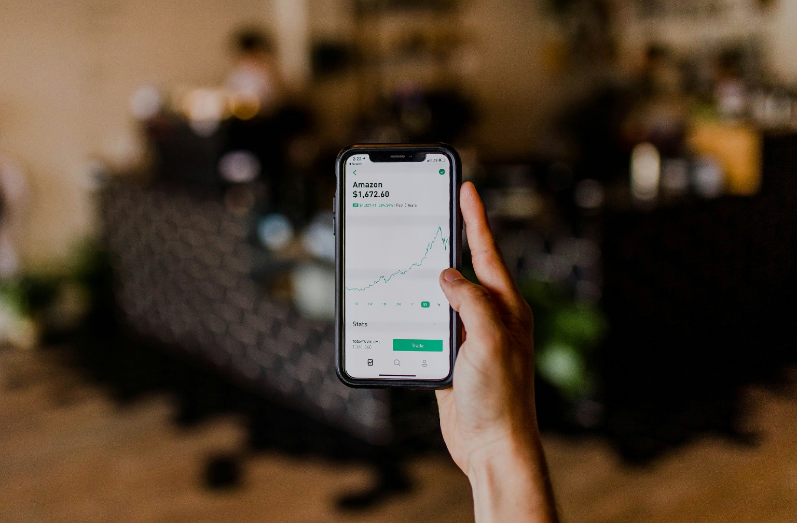

Crafting a Stonks App Web Design
In the fast-paced world of finance, a user-friendly and visually engaging interface is crucial for any application, especially one focused on tracking stocks and investments. Let's delve into the key considerations for designing the web interface of the Stonks App, ensuring a seamless blend of functionality and aesthetics.
The heart of the Stonks App lies in its dashboard. Prioritize the display of real-time financial data, including stock prices, investment portfolios, and relevant news updates. Implement intuitive data visualizations, such as charts and graphs, to provide users with a quick and comprehensive overview of their financial landscape.
Intuitive Navigation and Information Hierarchy
Craft a navigation system that guides users effortlessly through the app's features. Prioritize an intuitive information hierarchy, ensuring that users can easily access crucial features like portfolio management, stock analysis, and account settings. A clean and organized navigation structure contributes to a positive user experience.
Personalized User Profiles
Implement user profiles that allow for customization based on individual preferences and investment strategies. Personalization can include setting favorite stocks, creating watchlists, and receiving personalized insights. This tailored approach enhances user engagement and encourages users to interact with the app regularly.
Responsive Design for Multi-Platform Accessibility
Given the diverse devices used by investors, ensure the Stonks App's web design is responsive. A seamless experience across desktops, tablets, and smartphones is essential for user satisfaction. Responsive design not only accommodates various user preferences but also reinforces accessibility, a key consideration in modern web development.

Conclusion
In designing the web interface for the Stonks App, the emphasis should be on creating a seamless, visually appealing, and functional experience for users navigating the complexities of the financial landscape. By prioritizing clear data presentation, intuitive navigation, and responsive design, the Stonks App can become a go-to platform for users seeking to stay informed and engaged in the world of investments.